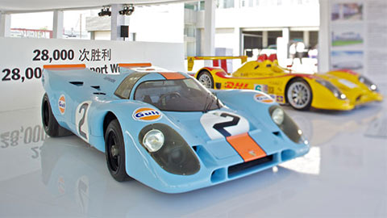

活动环节

保时捷博物馆1
2007年建成的新博物馆位于祖文豪森的保时捷广场，旨在展示保时捷的历史和品牌魅力。在过去60年的发展中，每一款保时捷车型都继承传统，延续纯正跑车基因。 “极至体验”活动从斯图加特保时捷博物馆中精挑细选出一系列经典历史车型，并与其后代车型并肩展示。今年我们还将特别推出全系911历史车型，以独特的角度为您呈现这款传奇跑车的历史沿革。现场还将派发保时捷在线博物馆“入场券”，让您随时徜徉于保时捷的历史长河之中。